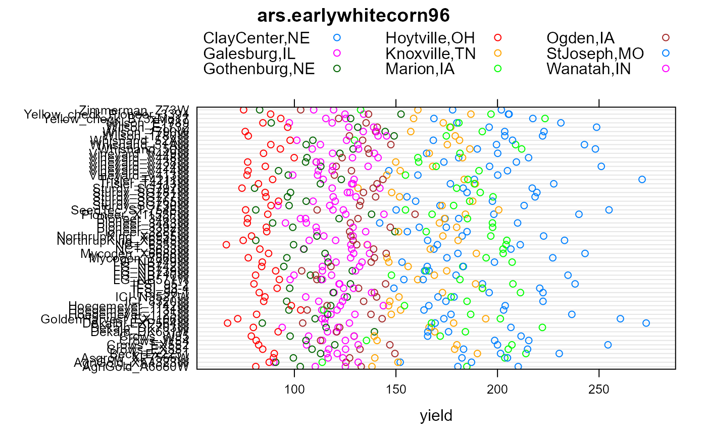
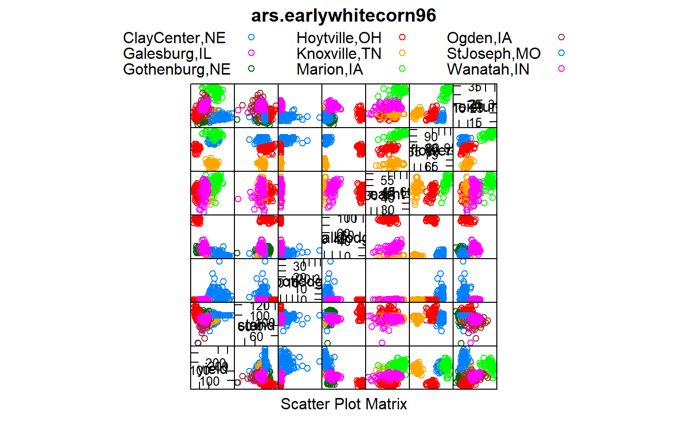

ars.earlywhitecorn96.RdMulti-environment trial of early white food corn for 60 white hybrids.
A data frame with 540 observations on the following 9 variables.
loclocation, 9 levels
gengen, 60 levels
yieldyield, bu/ac
standstand, percent
rootlodgeroot lodging, percent
stalklodgestalk lodging, percent
earhtear height, inches
flowerdays to flower
moisturemoisture, percent
Data are the average of 3 replications.
Yields were measured for each plot and converted to bushels / acre and adjusted to 15.5 percent moisture.
Stand is expressed as a percentage of the optimum plant stand.
Lodging is expressed as a percentage of the total plants for each hybrid.
Ear height was measured from soil level to the top ear leaf collar. Heights are expressed in inches.
Days to flowering is the number of days from planting to mid-tassel or mid-silk.
Moisture of the grain was measured at harvest.
L. Darrah, R. Lundquist, D. West, C. Poneleit, B. Barry, B. Zehr, A. Bockholt, L. Maddux, K. Ziegler, and P. Martin. (1996). White Food Corn 1996 Performance Tests. Agricultural Research Service Special Report 502.
library(agridat) data(ars.earlywhitecorn96) dat <- ars.earlywhitecorn96 libs(lattice) # These views emphasize differences between locations dotplot(gen~yield, dat, group=loc, auto.key=list(columns=3), main="ars.earlywhitecorn96")## dotplot(gen~stalklodge, dat, group=loc, auto.key=list(columns=3), ## main="ars.earlywhitecorn96") splom(~dat[,3:9], group=dat$loc, auto.key=list(columns=3), main="ars.earlywhitecorn96")#> Call: #> manova(cbind(yield, earht, moisture) ~ gen + loc, dat) #> #> Terms: #> gen loc Residuals #> yield 19200.2 378467.7 51875.0 #> earht 4782.2 4750.6 1652.1 #> moisture 446.1 6430.5 258.5 #> Deg. of Freedom 59 4 236 #> #> Residual standard errors: 14.82596 2.645798 1.046639 #> Estimated effects may be unbalanced #> 240 observations deleted due to missingnesssummary(m1)#> Df Pillai approx F num Df den Df Pr(>F) #> gen 59 1.6158 4.669 177 708 < 2.2e-16 *** #> loc 4 2.1686 153.898 12 708 < 2.2e-16 *** #> Residuals 236 #> --- #> Signif. codes: 0 '***' 0.001 '**' 0.01 '*' 0.05 '.' 0.1 ' ' 1